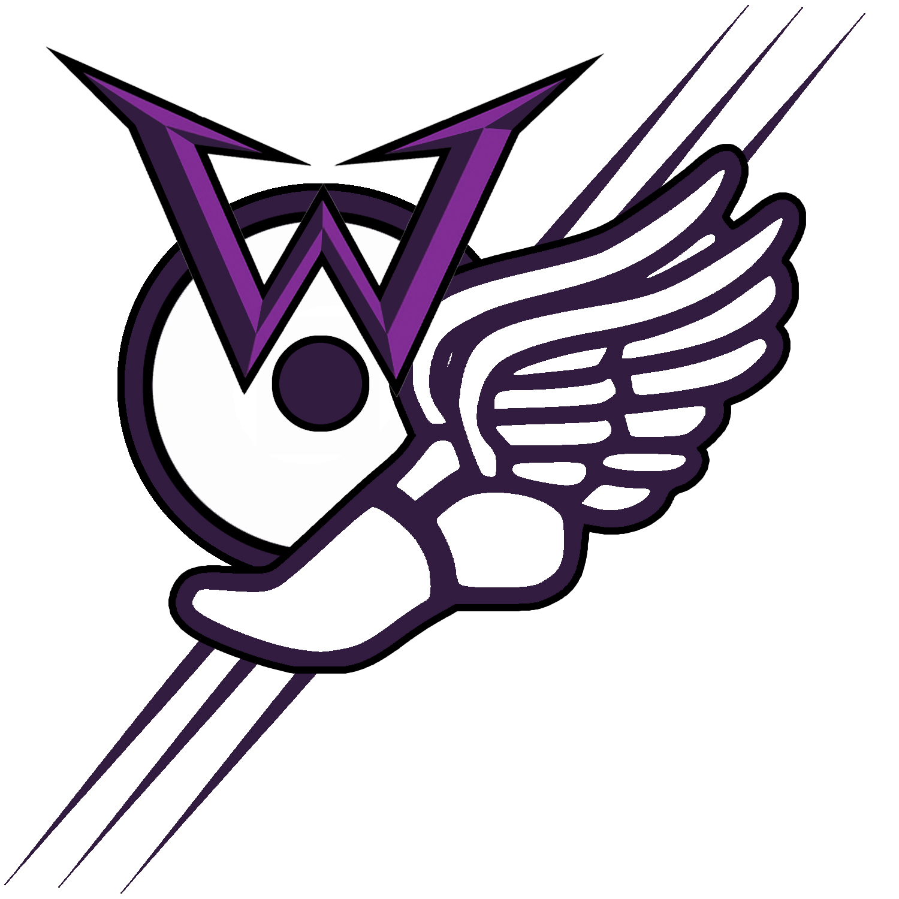

Track and Field Logo
This logo was created for the Warrenton High School Track & Field Teams. While the Nike's foot is a traditional symbol for running events, the additional elements represent the javelin, discus, and shot put events. It was done with the intention of incorporating the symbolism of the field events into the logo.